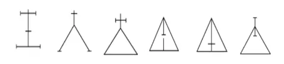

Astrology Grimoire
South Node
Type
Correspondences2
Symbols1
Geomantic Characters of the Dragon's Tail
The South Node rules one geomantic figure, marking the threshold of exit and the release of what has been outgrown. This character can be inscribed on talismans, traced onto candles, or drawn on spell materials to sever ties, shed old patterns, and close doors that no longer serve.
From Cauda Draconis
